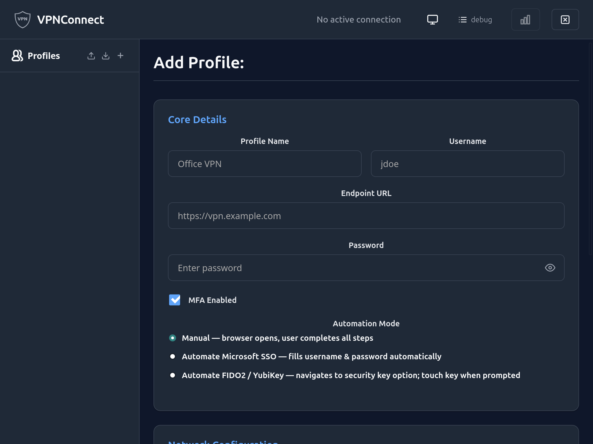

How to connect with MFA
This guide shows how to set up and use a VPN profile that uses browser-based multi-factor authentication. It covers manual mode (any identity provider), SSO mode (Microsoft Azure AD), and FIDO2 mode (passkey / security key).
For a conceptual explanation of all three modes, see MFA browser automation.
Prerequisites
- VPNConnect installed and the daemon running. See How to install VPNConnect.
- A Pulse Secure VPN endpoint that redirects to a browser-based MFA login.
Step 1 — Create an MFA-enabled profile
From the CLI
Manual mode (any identity provider)
vpnconnect profile add \
--name work \
--endpoint https://vpn.example.com \
--username alice@example.com \
--mfa \
--store-password=false
The --mfa flag enables the browser-based authentication flow. By default the browser opens at the VPN URL and waits for you to log in manually — this works with any identity provider.
SSO mode (Microsoft Azure AD / Office 365)
vpnconnect profile add \
--name work \
--endpoint https://vpn.example.com \
--username alice@example.com \
--mfa --mfa-automation-mode sso \
--store-password=true
With --mfa-automation-mode sso, the browser enters your username and password up to the MFA challenge, then waits for you to approve the push notification or enter a TOTP code. Requires a user@domain.com format username. Tailored to the Microsoft Azure AD login page.
FIDO2 mode (passkey / security key)
vpnconnect profile add \
--name work \
--endpoint https://vpn.example.com \
--username alice@example.com \
--mfa --mfa-automation-mode fido2 \
--store-password=false
With --mfa-automation-mode fido2, the browser clicks through to the passkey / security key option on the Microsoft Entra sign-in page. You handle the native WebAuthn dialog (PIN entry + key touch) yourself.
From the UI
In the Add Profile (or Edit Profile) form, check MFA Enabled. An Automation Mode selector appears with three options:

| Option | Behaviour |
|---|---|
| Manual | Browser opens; you complete all login steps yourself. Works with any identity provider. |
| Automate Microsoft SSO | Browser fills username and password automatically, then waits at the MFA challenge. Requires user@domain.com username format. |
| Automate FIDO2 / YubiKey | Browser navigates to the security key option on the Microsoft Entra page; you touch the key when prompted. |
Select the option that matches your organisation's login flow, then fill in the remaining fields and click Save Profile.
Step 2 — Connect
vpnconnect connect --profile work
A Chrome browser window opens and navigates to the VPN endpoint. Complete any login steps and the MFA challenge. The window closes automatically once the DSID cookie is obtained.
The connection is then handed to the daemon and the connect command returns.
To override the automation mode for a single invocation without editing the profile:
vpnconnect connect --profile work --mfa-automation-mode sso
vpnconnect connect --profile work --mfa-automation-mode fido2
Pre-authenticating (optional)
If you want to obtain the DSID cookie ahead of time — for example, to time-box the browser interaction separately from the connection — use the mfa command:
vpnconnect mfa --profile work
Then connect immediately after:
vpnconnect connect --profile work
Because a valid DSID cookie is now cached, connect will not open a browser.
Troubleshooting
| Problem | Likely cause | Resolution |
|---|---|---|
| Browser opens but SSO login fails immediately | Wrong username format | Use user@domain.com |
| FIDO2: "sign-in options button not found" | Microsoft page layout changed | Fall back to manual mode; check logs with --log-level=debug |
| "MFA failed" error after browser closes | DSID cookie not found | The post-auth proceed button may have changed selector; check logs with --log-level=debug |
| Browser times out (5-minute limit) | MFA prompt not completed in time | Re-run connect and complete the MFA faster |
| "Maximum sessions reached" dialog | Orphaned session on the server | Click through the dialog to replace the old session; vpnconnect handles this automatically |
| SSO mode fails at password field | Microsoft page layout changed | Remove --mfa-automation-mode and complete the form manually, or check logs for selector errors |